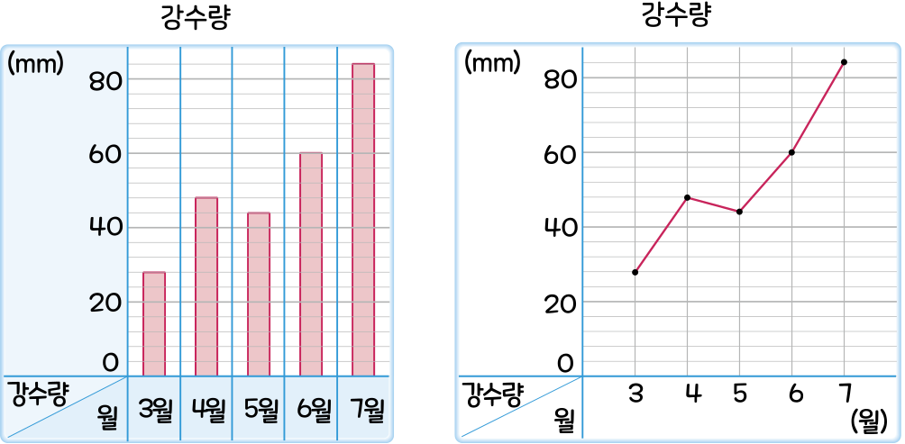

5. 자료와 꺾은선그래프
꺾은선그래프를 알아볼까요(1)
수학
110~111
쪽
수학 익힘
78
쪽
[
~
]
은하가 살고 있는 지역의 강수량을 조사하여 나타낸 막대그래프와 꺾은선그래프입니다. 두 그래프를 보고 물음에 답해 보세요.

강수량의 변화를 한눈에 알아보기 쉬운 그래프는 어느 것인가요?
꺾은선그래프는 변화하는 양을 점으로 표시하고 그 점들을 선분으로 이어 그린 그래프이므로 강수량의 변화를 한눈에 알아볼 수 있습니다.